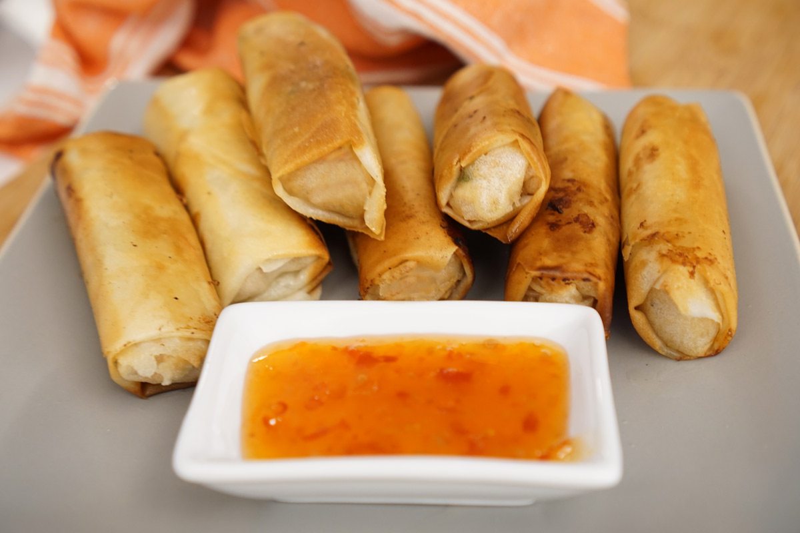
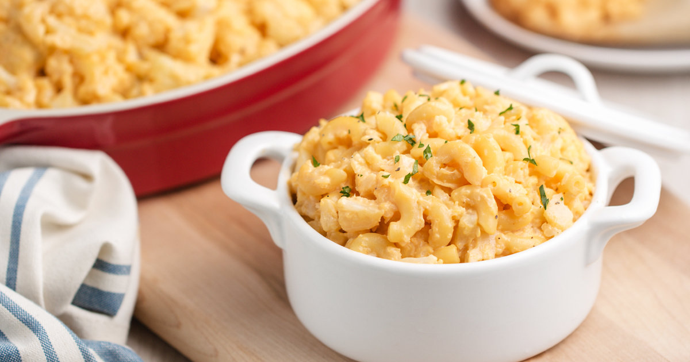
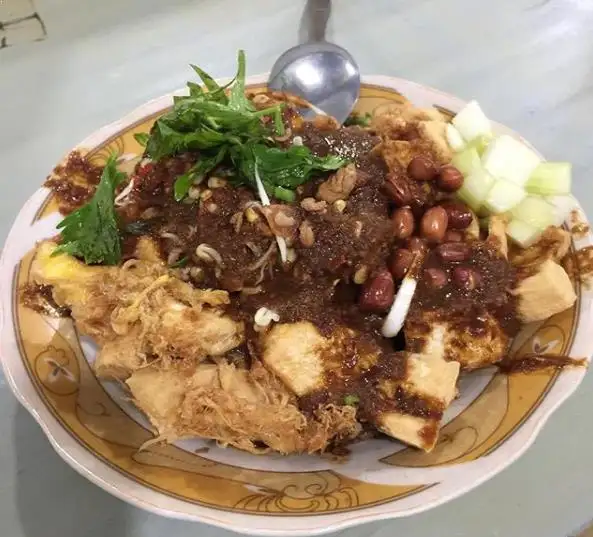
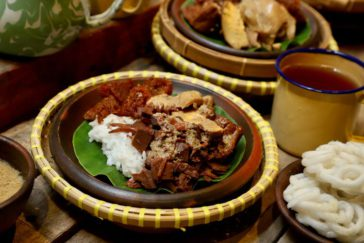

Keripik Singkong Mercon adalah keripik dengan citarasa super pedas yang terbuat dari singkong. Keripik ini cocok buat kamu yang doyan dengan cemilan pedas. Tak hanya pedas, keripik ini ada dalam dua varian rasa, rasa gurih dan rasa manis.
2

Lumpia Yummy
Jakarta
Lumpia Yummy adalah lumpia asli dengan beragam pilihan isian yang lembut dan creamy. Kulitnya sangat gurih digoreng hingga matang sehingga tampilannya sangat menggugah selera. Lumpia Yummy bebas MSG, cocok untuk kamu yang menghindari MSG.
3

Macaroni Sehat
Semarang
Berikan yang terbaik untuk anak agar anak tetap sehat. Salah satu jajanan yang pas untuk menjaga kesehatan si Kecil adalah macaroni sehat yang bebas MSG. Kandungan proteinnya tinggi dan ada banyak unsur kebaikan dalam setiap gigitannya.
4

Lontong Tahu Telur
Madiun
Di daerah asalnya, makanan khas Madiun ini juga dikenal dengan tahu panggung. Biasanya, makanan ini disajikan dengan taburan daun bawang dan bawang goreng di atasnya.Karena orang Jawa Timur dikenal sangat menyukai pedas, sehingga banyak penjual lontong tahu telur menyediakan sambal di atas meja.
5

Gudeg
Yogyakarta
Makanan khas Yogyakarta yang wajib dicoba ini biasanya dimakan bersama nasi dan disajikan dengan kuah santan kental atau areh, ayam kampung, telur, tahu dan sambal goreng krecek. Meski berasal dari Yogyakarta, tetapi sejumlah kota di Jawa Tengah dan beberapa wilayah Indonesia lainnya juga sudah banyak memproduksi gudeg, salah satunya adalah kota Solo.